“Matttttti?” My mom called. “Something just happened to your bike? Come up here and take a look.”
I was half-naked in the basement bedroom, ready to fall asleep. The Red Granite Grinder was starting in eight hours, and I had to get up in six. I came upstairs.
“I’m not sure what happened,” My mother said. “but it scared the living daylights out of me.”
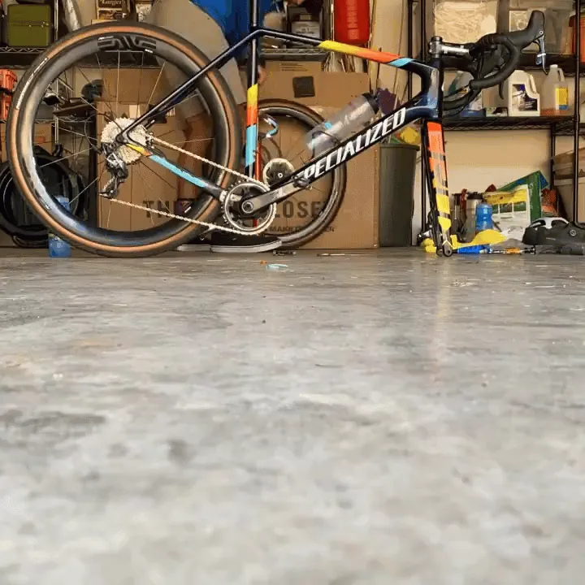
I looked at my race bike, which was resting benignly on the wood floor. The front tire was flat. Earlier that day, I had assembled my bike, which I had shipped from Colorado and went out from a pre-ride. It felt good for the first 15 minutes, and all of a sudden, it didn’t. If you bike enough, you just know how your bike feels, and if anything is off, the alarm bells start to go off, a reflex after enduring several sudden catastrophic mechanical failures.
My steering felt possessed like an invisible hand was jerking it from one side to another. Was it in the wind? Did I tighten the head tube wrong? Maybe it was nothing. I kept riding.
Then I got out of the saddle and almost veered into a curb. Holy buckets, that’s not right. I whipped out my multitool and took apart the headset. As I loosened the fork, tiny bearings fell out, and then I saw it – my head tube bearing had exploded. I was steering carbon on carbon. This had never happened to me, so I spent some time trying to put tiny ball bearings back into the casing while a headwind tore into me. Soon I realized this was futile, and even if I succeeded, it’s not like I could ride on it tomorrow. I called for a ride.
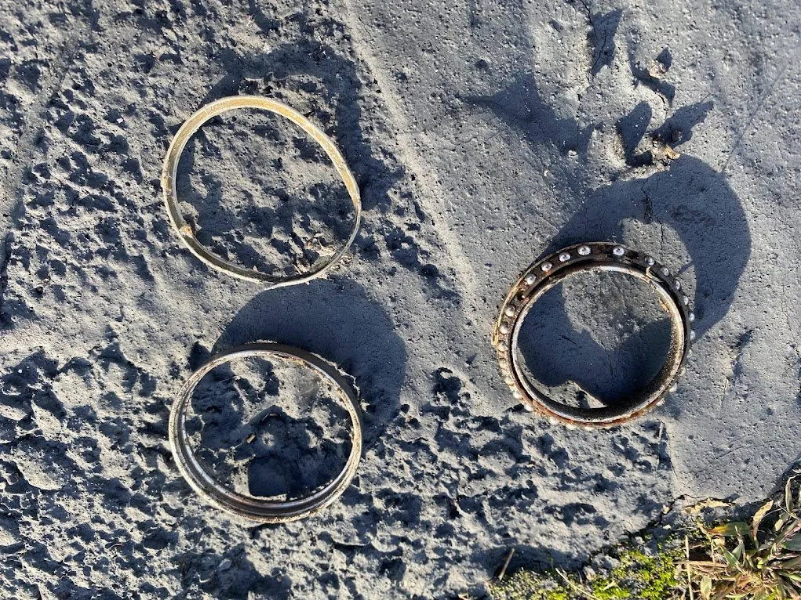
Luckily, I had started my ride early, and bikes stores were still open. The first didn’t have the part I needed, so Tom, the owner of Trek Bicycles Wausau, called across town and asked if they had it. He had one left. We rolled up. The mechanic, Zach, took one look at the old bearing and said, “Yep, you weren’t going far on that,” and installed the new one.
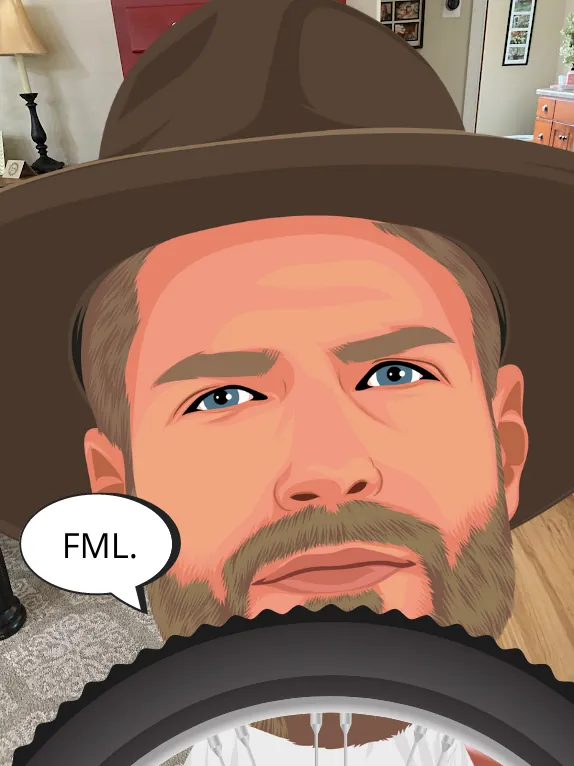
Now I sat in my parents’ dining room alone (my mother left the room because I couldn’t get the bead onto the rim and I was dropping F-bombs) with my shirt off, profusely sweating while repairing a flat caused by nothing, wondering if God was trying to send me a message and I just wasn’t listening. Was I going to die tomorrow? Get run over crossing highway 29? Endo over a cliff on Rib Mountain? Maybe this phantom flat was the universe’s way of trying to stop me from starting.
I got to bed by 12:30am and set the alarm for 5am, reluctantly.
When the alarm clock from 1972 erupted to life at 5 am, I felt like death. I stumbled out of bed and headed for the kitchen, and my sister, who had driven up from Madison to support me, was already awake and seemed like she had done a line of cocaine.
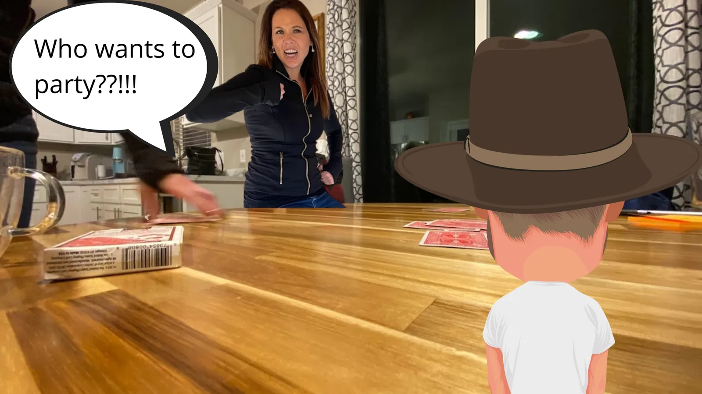
“It’s YOUR day. Are you readyyyyy? Yeah Yeah, go Matii go Matti, go Matti.” I could barely see out of my face, but it was impossible not to smile. I tried to operate the coffee machine, failed and my sister said, “Oooo, looks like you’re having some trouble with that. Why don’t you just sit down while I make you a cup of coffee?” That interaction was our childhood in 20 seconds. I do love my sister.
My mother, father, and sister decided they would drive down to downtown Wausau to see me start. I rode there to warm up. My parents live on a hill above town, so my first few pedal strokes were straight into a wall of cold. I feared the cold would rebury the enthusiasm my sister built, but instead, I came more alive. The closer I got to the start, the more my excitement grew.
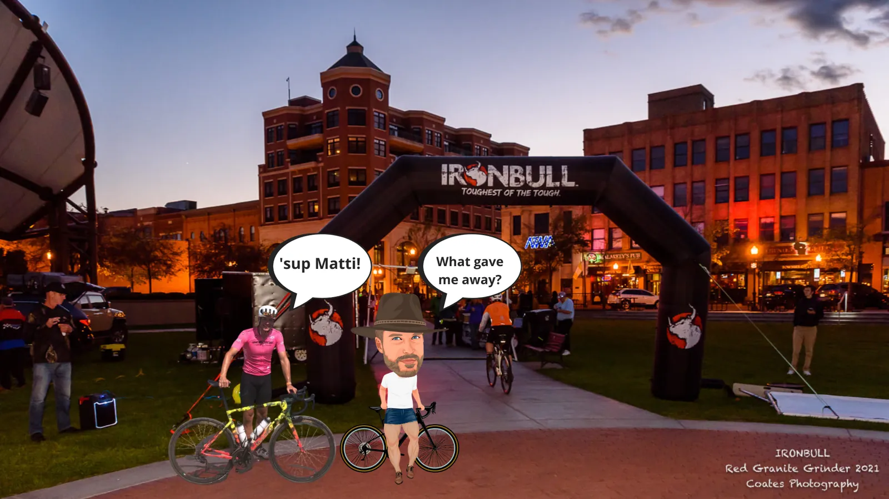
Wausau is not an endurance mecca, but you wouldn’t know that from downtown. Racers buzzed over the 400 block. The finish line had a great arch thronged by a trailer and tents with the Ironbull logo on the side. The air vibrated with hot pre-race energy.
Somebody with a fantastic Wisconsin accent got on top of a pedestal and gave pre-race instructions while some random guy I never met before rolled up and introduced himself.
“Hey Matti, he said. “You ready for this?”
It was Labi Shabani.
Say what you want about social media, but it’s not all bad. Labi and I have never met before. He only knows me through Strava. Through the murk of the start line, he somehow saw me sitting there shivering, the only thing separating me from Cain was a few letters on my bibs that said ‘Rio Grande Cycling Team.’
He’s a local hitter, and when I come into town, every July, I go after local KOMs, and then he surveys my work after the fact and surgically pegs them back.
I had spent more time than I care to admit plotting to send him messages through Strava that I’d taken his KOM, and thrown things when he sent me some.
Labi is instantly likable, and I lament that I hadn’t just got his number and asked to just ride with him when I’m in town rather than trying to snipe him digitally.
The gun is about to go off at the start, and we line up. As I roll through the grass to the start line, I shift into a lower gear, and my chain slips off into the spokes. My indexing is off. My chain is buried deep, and it’s only through animal desperation that I yank it clear and upshift as the sound of ‘one minute to start’ booms around the square in the background.
Try as I might, some things never change. I am always that guy who starts the race with a significant mechanical problem, and there’s no time to do anything about it, so I just have to deal.
I line up on the curb, the gun goes off, and we all plunge down the main street into the cold.
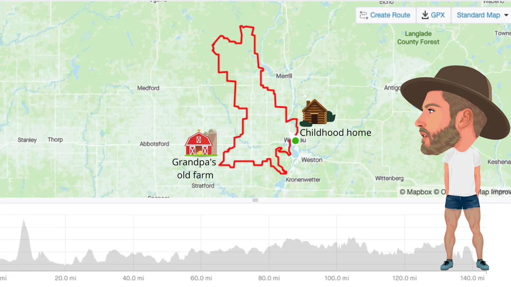
The course is an instant classic. I’ve been to Unbound. I’ve done BWR San Diego. I’ve done SBT GRVL. I’ve done Gunni Grinder. All of them are great. Red Granite Grinder is right up there with them.
It starts downtown and heads directly for Rib Mountain, the second-highest point in Wisconsin but easily the greatest in prominence, rising 800 feet above the rolling farmland. From there, you dismount and hike a bike, then scream downhill, ride to the Wausau School Forest, then to 9-mile Recreational forest snowmobile trails, head out West along dirt roads to Edgar for leaf-covered, wooded mountain bike track, and then head North for 50 miles until veering onto snowmobile trails littered with ruts, mud, and downed trees. Shortly after the top of the course, the road departs quiet backcountry gravel roads onto an ATV trail that’s barely an ATV trail complete with a river crossing. After that, it’s a mixture of gravel and pavement all the way back, with final, punishing flourishes of elevation gain in the last 14 miles, which just happen to run right by my childhood home. 144 miles in total, 6,000+ feet of elevation gain, and enough gravel to fill a pit.
What was my plan? Attack on Rib Mountain.
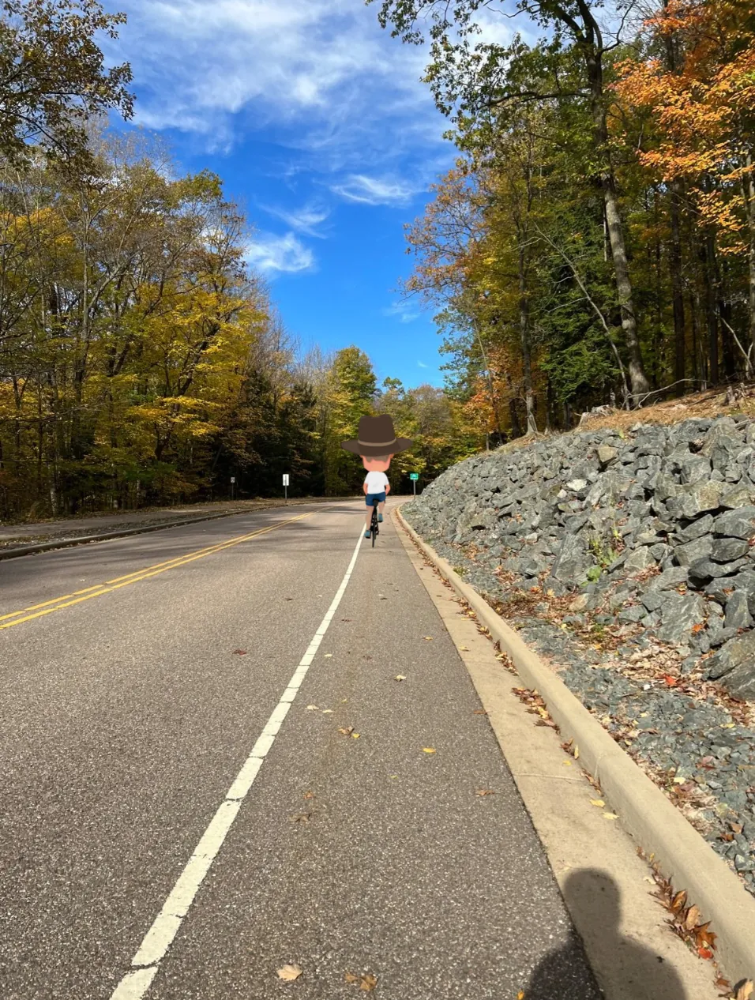
As I came around the group leading into the climb, I couldn’t find a gear that would stick, so I just kept my hand on the shifter to keep it in one gear as I attacked through the shoulder.
“Grind it until you find it!” someone yelled.
As they said that, I lit it. I went dummy hard, dead-gripping my handlebars, opening up my altitude-adapted lungs into thick sea-level air, and didn’t look back.
I heard breathing behind me for a while, and then nothing. Rib mountain climb starts gradually and then ramps at the end. When the grade got nasty, I got nasty, and as I crested the top, I looked back.
30 seconds at least, maybe 45 (it turned out to be more like a minute). We’d ridden 8 miles, 136 to go.
Go? Commit? Try to stick it? Am I insane?
Yes. Yes, I am.
I have a good buddy Travis who races bikes, and we have a mutual appreciation for the Immigrant song by Led Zepplin. If you’re about to do something dumb, there’s nothing better to stoke the stoke.
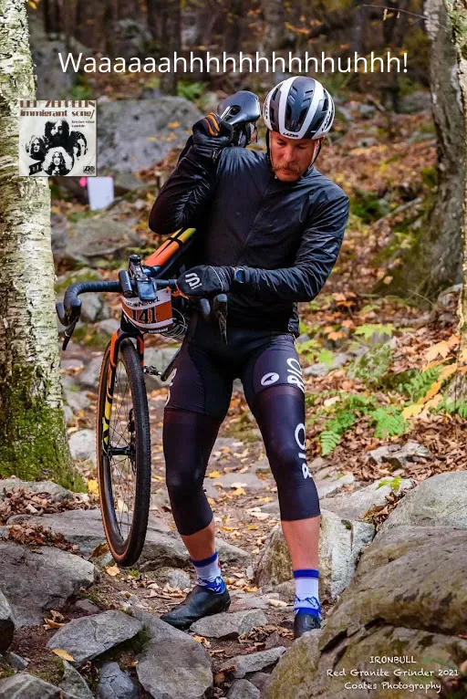
Sure, they caught me – 7 of them did 35 miles in. Of course, they caught me. They bridged to me, and I hopped on to the train, thankful that I didn’t feel barbecued.
People attacked, and I bridged. The group collected. Someone else attacked, and I bridged. One attack, in particular, made me appreciate the style, the explosiveness, and I realized it was Labi. He had pulled me back. He had pulled everyone to me.
A hill came, and he went again. The first guy in the group said, ‘Let him go. He can’t hold it.’ I ignored him and followed. I wanted to ride with Labi. I wanted it to be between him and me. Not in a weird way, it’s just that I liked him, and if I was going to ride for a long time hard, I wanted it to be him.
Two other guys followed, and collectively the four of us separated from the others, trading pulls into the punishing headwind. Labi took manful pulls, enough that it stung, and I closed him conservatively and said, “Can I say something?”
“Sure?”
“We have 115 miles left. Let’s work together to build a gap. You can beat me at the end, but for the love of God, stop going so hard when you pull.”
His face was caked in sweat, and he agreed.
I’ve been racing a long time, and I know the score. No matter how strong you are, you’re not stronger than eight people. But now we were four. The others behind us faded, and with every foot we put between them and us, I knew the balance was shifting toward me. If we kept working and I went, they’d all have to agree to work together to pull me back, and if they got disorganized for even 30 seconds, a gap could open up they wouldn’t close unless I exploded.
I bided my time. We got through the school forest leaf-covered trails outside Edgar without incident, and as we closed in on the second aid station, one of them caught their front wheel in the mud and went down. He was arguably the strongest of the others. I was the last in the group, and I veered around him and asked if he was OK. He said yes, but I didn’t stop, and I never saw him again.
And then there were three.
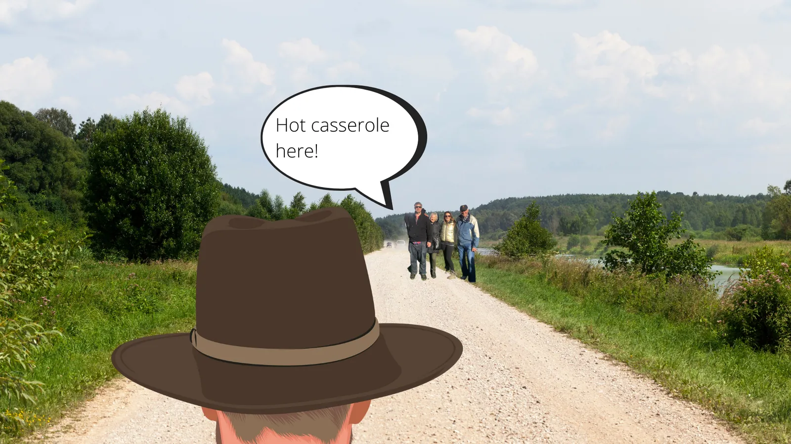
When I came into the second aid station by highway 29, I saw my family. They knew what to do because I told them exactly what I wanted and quickly grabbed everything.
“Do you want three water bottles?”
“Two.”
“Both sandwiches?”
“One.”
“Sunglasses?”
“Hit me.”
And then I was gone. I was just gone faster than the other two. In the end, if you look at the differences, my family’s support was decisive – they were fast, effective, cheery, and done. I rode up to Highway 29 at mile 50, looked back at my lingering competitors, and decided to go while they were still grabbing water. They would not catch me again.
Soloing for 94 miles is a bold move, but today I felt inexhaustible. My legs did not hurt. My lungs did not hurt. The only thing that seemed to hurt was whether my gut could handle the pure amount of calories required to keep on smashing hard for 144 miles.
The next 50 miles, while devoid of almost any technicality, were the most severe of the entire race. I inhabited an unknown, knowing I had a gap, but not how much, while the West wind blew and canceled my speed as the roads headed North and West, past old farms time forgot, and lives on the intersection of nowhere. I loved it.
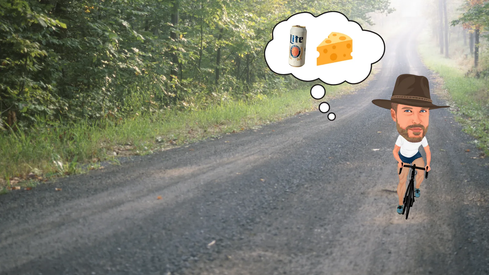
I played games with myself. I got aerodynamic on the downhills and went hard on the uphills. I looked around and told my outcome voice to shut up. I had a lead, but nothing was decided. I feared flats, picked clean lines, stayed within myself, and kept riding as smoothly as possible, looking back in the distance to see if a smoothly rotating horde agitated at the periphery, saw nothing, and rode as if I did.
Gravel has poetry to it, especially in the deep belly of the in-between. Distance has its own implacable language that doesn’t care about your bike, your energy, or your headwind. It simply is. The miles between aid stations 50 and 100 simply had to be crossed. You just point your bike down the undulating but subtly rising geography, narrowing your profile, and hammer up the uphills, making sure to not let the effort detract from the menace of the grind. The grind is the point – why come all this way to try to avoid it?
What I saw were lives. Lives on an acre here, an acre there, distance from what you’d charitably call civilization. This county is very old, and many people have lived here a long time and carved out a little square in the forest and called it a life. As I pass these places, I don’t understand them, even if I grew up only a handful of miles from them, and I realize that’s the point. The silence and inscrutability and remoteness of this point is the grind in Red Granite Grinder – not Rib Mountain, not 9 mile, nothing hard or immediately gratifying that shows differences in fitness, but the long miles alone where you commune with the essence of Wisconsin, it’s rapacious remoteness, the inexplicable obscurity of so many people’s homes who don’t want to be understood, just left alone to live.
I almost missed the turn onto the snowmobile trails because I was so caught up in the rhythm of the roads, but my Garmin screamed, and there it was, the turn into the novelty of grassy paths into the heart of nothingness, which I took.
I knew I would lose time here – technical portions are not my strong suit – but I knew I was strong enough that not steering well wouldn’t kill me entirely. More than anything, the trail ate away at my sense of connection. I knew I was in the middle of nowhere, on land grudgingly offered for this purpose, with no help in sight. In that way, it fulfilled an unspoken mandate of any gravel race – reminding the racer, no matter how fast, just how helpless and dependent they are on vicissitude. I prayed my wheel wouldn’t explode. I prayed I wouldn’t miss a sign, and I came through, back to the sure car-friendly gravel cutting its way through nowhere Wisconsin.
I poured myself out now, yelling to no one now and then. I’d been out of water for an hour, sick of the incessant headwind that confined my speed to 16 miles an hour but yearned for THAT moment, the moment when my family came in sight at the northernmost point of the course with me in the lead. I wanted to reward their faith with a performance to match, to start to make them believe, as they topped me up and headed back toward Wausau, that this Colorado-based, Miller Lite drinking lunatic actually was fast, and there’s a good chance that I’d hold this to the line.
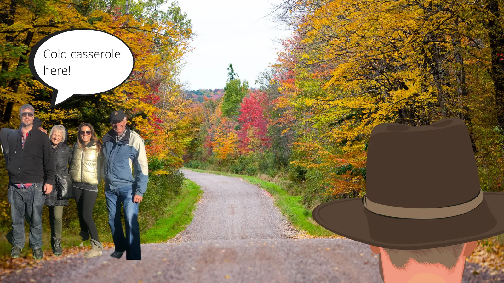
They finally pulled into view. 100 miles down, 44 to go. Everyone knew what to do.
“Water bottle?”
“Yes.”
“Pop-Tart?”
“Yes, please.”
My sister had a microfiber towel and wiped off my glasses.
“I’m thirsty. Does anyone have extra water?”
My brother offered me his Aquafina.
I lingered, high-fiving. Finally, my mother said, “OK, get out of here.”
She knew I could win. She wanted me to win. It wasn’t done, and she knew it, but she knew it could happen, but she wasn’t going to allow me to be too cute when I hadn’t closed the deal. She knows little of bike racing, but she knows everything about life, and in an instant, I understood her urgency.
It’s not done yet. There’s plenty of time to screw this up. Go. Bring it home. You’re almost home.
I had no idea what awaited me. I sailed past the third aid station, mumbled my number, and ran into a ditch. As I picked up my bike, my rear wheel tried to leave. I set my bike down and examined it in disbelief. My rear skewer, the thing that keeps my rear wheel connected to the frame, had come undone. I immediately thought of my sister, who has a fancy bike and had managed to strip the skewer somehow, ruining the frame. I had no idea how it had come so loose, but if it was stripped, my day was over. I pulled out my multitool, puckered, and started to turn.
It wasn’t stripped – it took. Jesus.
I remounted and carried on, running into a stream, which I sent it. What followed was the most brutal stretch of trail I’d ridden for a gravel race of all of 2021. Yes, there was a path, but it was a thicket with two narrow wheel wells. I rode through absolute BS and prayed nothing would explode. I felt like at any moment, something would explode. It had to. This was like riding through the jungle.
But I made it through, and then, fortuitously, I came into phone coverage.
The entire time, my sister had messaged the group keeping my wife abreast of my progress. She said:
“Matti came through in the lead and looks great. He’s gone, and he has a three-minute lead on second place.”
THREE MINUTES!!!
I had been dumping energy hard for 50 miles, and all I had was three minutes in second place?!!! WTF?!? I started to panic, and my mind went:
Was it a group? One person? Only three minutes back? That’s a mile, so I have 40 miles left, so all they have to do to close me is average a 1/2 mile an hour faster than me, and they’re in it? Jesus, Jesus, Jesus.
I started smashing hard. I dipped into the energy I didn’t have. I got through one bottle in 20 minutes which I needed for the next 90. I panicked, looked back, waiting for the appearance of a train of riders cresting the hills behind me. I saw nothing.
Then it hit me. I stopped for three, four minutes at that aid station. If they packed up, then left, saw another guy three minutes after, minimally, they’re looking at a six-minute gap. My sister was way off. There was no way they were only three minutes back – I’d have seen it.
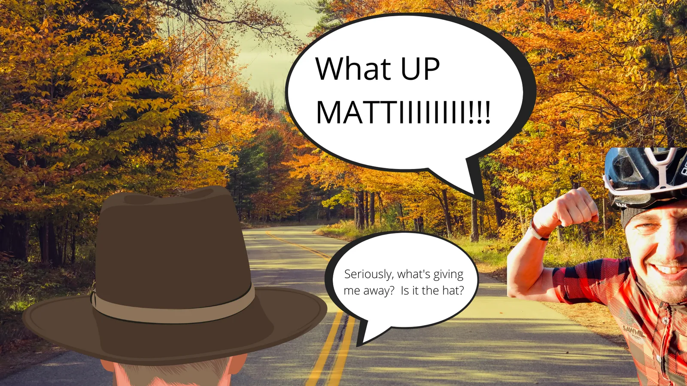
I eased off, and at that moment, on a paved section, I saw an ATV with a man, kid, and woman whip past me, and the sound of ‘Mattttttttti” hit my ears as they went past.
It was the random greeting from Labi earlier this morning, except now it was Brian Kreuger, pilot, farmer, father, and the fastest dude in Merrill in an ATV with his family rolling up and down the course with water, gels, and food. How did I know him? Strava, and only Strava.
He hollered my name, went the other direction, flipped it, and then drove alongside me.
“How long have you been solo?”
“Since mile 50.”
“Jesus.”
“How far back are they?”
“No idea!”
“You want some SIS gels?”
“Heck yes!”
His wife handed me gels, and all of us chatted for a bit. His son sat on his lap, two years old, and I immediately thought of Lars.
Before he departed, I asked, “How far away is Red Granite Bar?” That was the next aid station.
“Oh, you’re not close yet!”
“Right on! Thanks for everything.”
My heart sank. More grinding awaited.
The Red Granite Bar is 14 miles from the finish, a bar I knew well because in another life, I’d parked there and roller skied endless miles trying to be a fast cross country ski racer. I never became one. But a cyclist…
The closer I got to the Red Granite, the more familiar the roads became. At first, I saw roads like ‘Joe Snow’ and ‘Tesch,’ roads I’d heard of but never ridden. Then I saw it – ‘Rainbow.’ I’d ridden that. Then Highway F. Ridden that. Then I saw ‘Naugart.’ This was the turn to the last aid station.
I ate chunks of road. I surged toward it, and there was my sister on the side of the road opposite the aid station holding a water bottle, just like in the New Glarus Road race, then as now holding a liter bottle with perfect form.
Approaching, I cast aside my empties, rolled up to her, snatched it out of midair, and yelled my number. Perfect.
Later that night, I asked my brother when he thought I’d win.
“When I saw you at the last aid station with 14 miles to go, I thought the only way you wouldn’t is if you had a mechanical.”
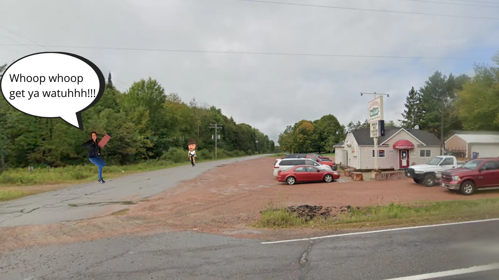
The last section goes down Naugart and then jags south down 28th ave. Up past the pit climb, past Maine drive onto the fine slip of asphalt where I first lived, and I learned to ride my bike, past Kellar drive, a dirt road where we moved, then into the maw of the Billy Goat Hills.
I got up to speed and super tucked past the Chesbroughs old house, where the new homeowner was mowing his lawn. He saw me ripping by, paused, and smiled at me while I soared over the drop.
Then I approached the Braatz house. It wasn’t aerodynamic, but I lifted out of my super tuck and sat upright, tipping my helmet toward their home. If it weren’t for the Braatz, I’d never have discovered endurance sports. This family, together with the Kresse’s, changed the trajectory of my entire life.
I descended into the guts of the Billy Goat Hills. Growing up here, I was never supposed to take this route to school, but I always did. My parents didn’t want me to take it because it was dangerous, which is precisely why I did it. I remember gunning my ’92 Honda Civic down the dirt road hard, blasting through the bridge at the bottom so I could shoot over the first of the two steep dirt hills.
It was reckless, dangerous, and I could have died any number of times because of a deer, an icy road, or an oncoming car. Today, I channeled that.
I hit the max speed of the entire race on that downhill and swept most of the way up the first Billy Goat, but it’s so steep, so loose, that even with all that momentum, I still had to grind and it’s a grind. My legs screamed, my bike creaked, but I was so close, and I sucked in pain.
Cresting, the final Billy Goat awaited. I wasn’t lazy – I got up to speed. I freewheeled, drifted to the right, and cut a good line into the next, steeper, longer Billy Goat.
And then I hit a pothole.
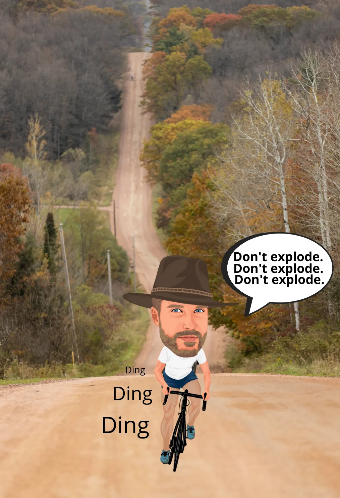
My bike screamed, and the sickening screaming of rubbing carbon and metal or some combination of that filled my ears. I stopped and got off. I examined my bike. The rear wheel wouldn’t move. I looked at it. WTF happened??? I tried to move the wheel – it wouldn’t budge. I threw the bike toward the ditch and lifted a middle finger to the heavens screaming, ‘F**k you Goooooooodd!’
I’d been solo for 129 of 144 miles. I had a huge lead or a big one, at least. This was a race tailor-made for me in the town I grew up in that went past nearly every part of my childhood. I’d had a terrible year filled with innumerable bad races and mistakes, and I was less than 10 miles out from putting together a complete race, and now, in the second to last uphill, in the final wrenching grades, providence struck.
If this didn’t happen, I would have crested this climb, looked back, saw no one, and cruised into downtown Wausau in a reverie. Amid my fury, a quote came to mind.
“Ask God for strength, he gives you trials.”
So I picked up my bike. I ran up the last Billy Goat, the back wheel dragging. At the crest, I got on it, let my momentum go, and it turned. I had broken a spoke. It would still turn, but every revolution, the tire’s sidewall hit the sidewall of the chainstay – only a matter of time before the contact ate through the chainstay, contacted the tube, and the tire blew.
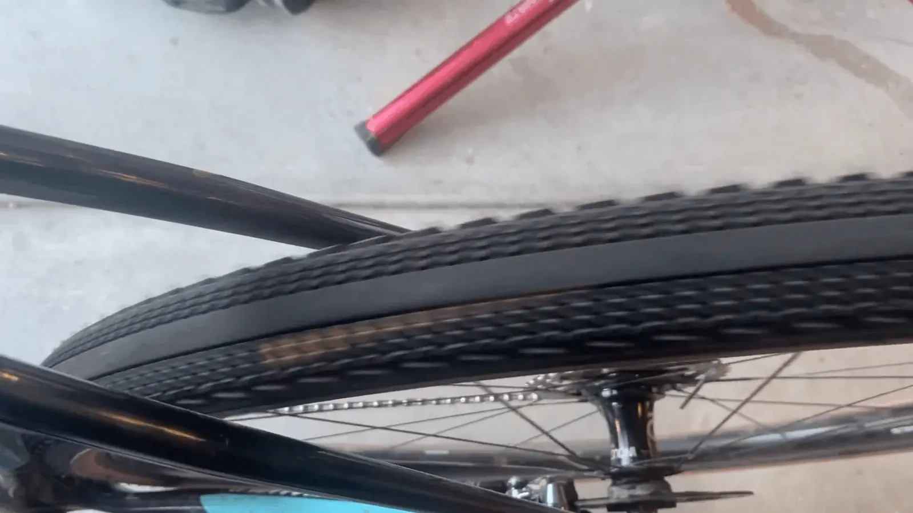
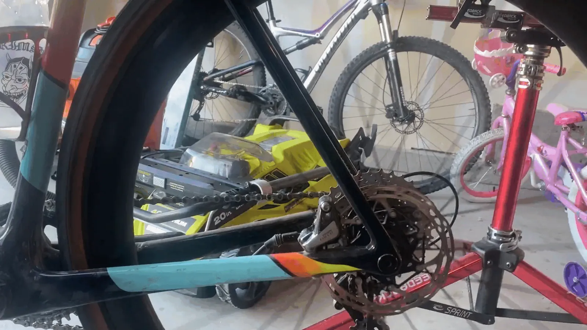
So I rode, every revolution of the wheel braking the bike. I puckered as I descended down into Brokaw, grabbing brakes because I didn’t want the momentum to intensify the contact. I made it into the old mill town.
‘
Finally, I hit The Brokaw Hill – the final climb. I grunted through it, my heart rate rising to a level it hadn’t reached since Rib Mountain, 7 hours earlier, every revolution my tacoed wheel rubbing and slowing my momentum, bringing me closer and closer to the tire giving way.
But I made it. I caught someone in the 85-mile race and drifted down into Wausau. It could have been so different. I could have looked back, knowing I had won and spent every revolution soaking in this rarified air when everything comes together, but the fear of impending catastrophe filled me with such anxiety that I shook, rattling the bars.
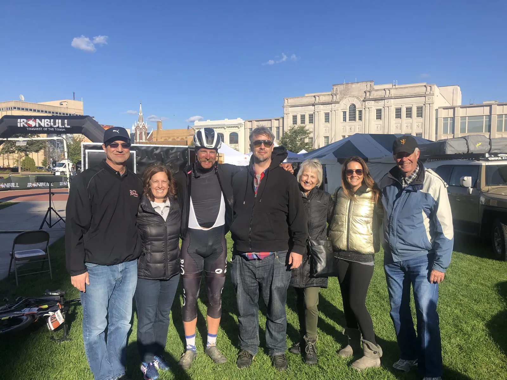
But I arrived. Volunteers waved me in, and my family was framed in the overhang of IronBull arch across the finish line. My Uncle and aunt, mother, father, brother, sister, I crossed the line, my back wheel grudgingly offering up the final momentum, and 8 hours and 20 minutes of effort, hubris, and daring found their terminus in the soft grass of the 400 block.
The race above, by mile
Red Granite Grinder 144: where things happened
- Mile 8Top of Rib Mountain after the attack; about a minute’s gap
- Mile 35Seven chasers catch him
- Mile 50Leaves the aid station by Highway 29 alone
- Mile 100Family at the northernmost point; 44 to go
- 14 to goRed Granite Bar, the last aid station
- Under 10 to goPothole on the Billy Goat Hills: a broken spoke
- Mile 144Wins in 8 hours and 20 minutes
I won. I really freaking won. How did it feel?
My athlete, who is more like a great friend than a client, unprompted sent me this:
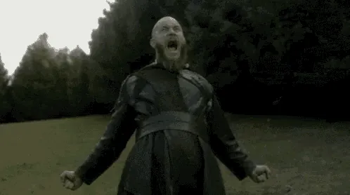
Yes. Yes – that’s how it feels.
Do you know how hard it is to put it together? For everything to go right enough that you win? The fitness, the logistics, the mechanicals, the nutrition, the tactics, the day – if it EVER freaking lines up, take it. Take it.
The next hours I spent in a living dream. I stood in the 400 block, old memories seeping from every brick, fielding questions, grabbing beers, then sinking my teeth into a burger in the cold air of October in Wisconsin, surrounded by family.
As we sat at dinner, my Uncle said something interesting. “You know, grandpa always said he was fast before he got a bum knee. They used to call him the Rib Fall Flash.” The race went right through Rib Falls.
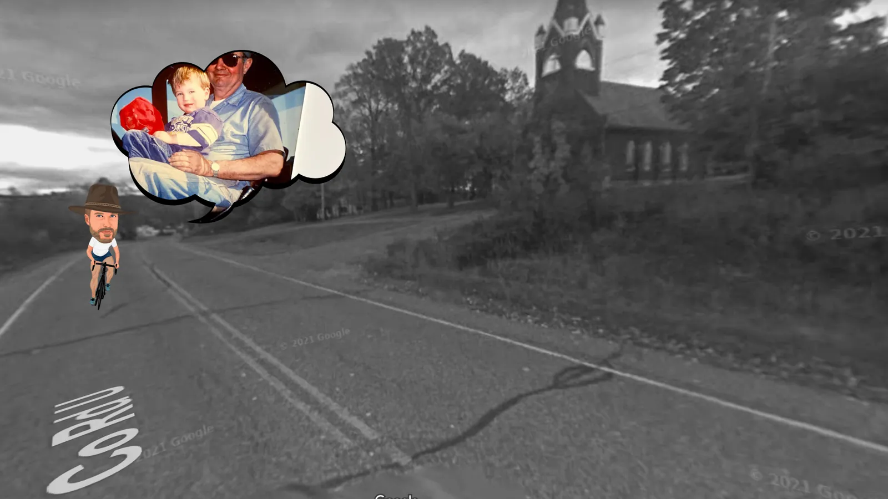
I’d thought of Grandpa Ron many times today. It was hard not to – the race took me right past his stomping grounds. I never knew he was called the ‘Rib Falls Flash.’ I wondered what he would think of all this, his grandson winning a 144 miles race that cut through his childhood and finished in the biggest town in 200 miles. I remembered Rib falls, the beautiful church arching out of the forest, crossing the bridge, looking at the falls, and the cruel hills climbing out of it.
I don’t know what he would have said. Maybe not much, as was his wont. But I’m sure he would have been waiting on the finish line on a bench, and he would have looked up at me, and extended his gnarled hands, and said something about maybe being hungry enough to eat two bratwursts. His spirit soared above us, and I felt renewal despite his passing. I’m not sure I’d thanked everyone I should have, but with his memory fresh, I gave him the last honors. Thanks for giving me my day in the sun, grandpa. Your strength is mine.
How to Red Granite Grinder 144
Fitness
Man, you’ve got to be fit. No one has every finished in under eight hours, so you’re guaranteed to have an eight hour day at least.
Ideally, you want your last long hard ride. to happen two weeks out from RGG. And then leading into the event drop the volume and keep the frequency and intensity steady.
More than anything though, come into the race well-rested. Racing lots of gravel events this year has taught me that yes, fitness is important, but you also need to be fresher than you’re probably comfortable with because going hard for 144 miles is just so hard on your body.
As in most builds, ideally, you only need about 12 weeks to go from the couch to good fitness. So if you’re building your whole year around this event, stay active throughout the year but start getting serious in July and you’ll be flying at 7am in mid October on the 400 block.
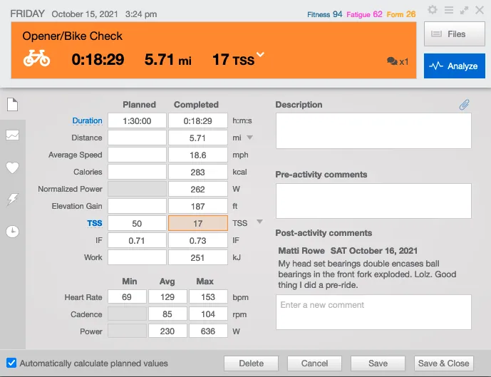
Skills
RGG isn’t the most technical course I’ve ridden, but it’s not 144 miles of champagne gravel.
The back side of Rib Mountain is technical, 9 mile forest is technical, Edgar School Forest is technical, and the snowmobile and ATV trails are technical.
It also has about 100 miles+ of firm, champagne gravel that barely make you steer.
In a race climate where every single race director thinks their event has to be the hardest, most brutal race out there, I think Shane Hitz gets this right.
The technical sections are fun, sometimes wild, but never so prolonged that you’re inwardly rolling your eyes because it’s just over the top. The smooth gravel also allows you to relax, focus on your effort, and look around rather than requiring constant focus not to hit some rut or tree. A good gravel race has both.
So, you should be able to:
- Hop a curb.
- Descend in the proper mountain biking position.
- Ride on narrow, wooded bridges.
- Bunny hop.
- Carry your bike and clip back in fast.
That said, this was 2021, not 2020. In 2020, it snowed. Weather changes everything. That course would have been 1000x harder in a blizzard (or a downpour for that matter. I’m looking at you 2019).
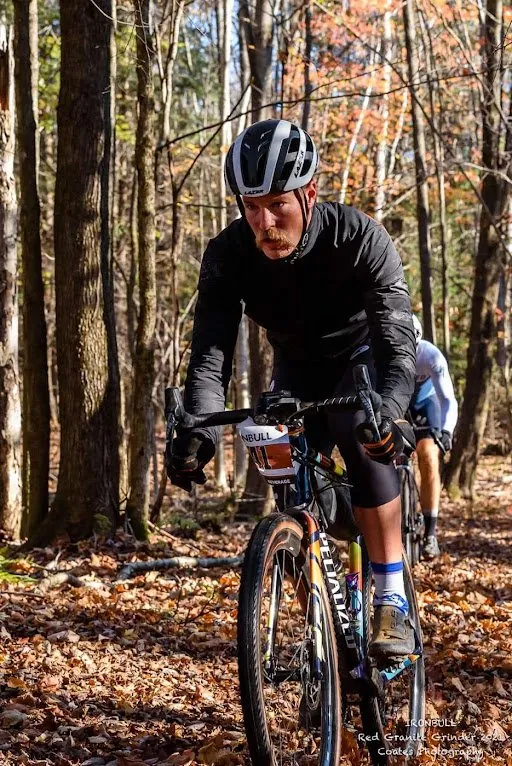
Equipment
The golden rule of gravel is comfort before speed.
It’s all well and good if you have the fastest setup out there, but choosing a tire that’s too narrow, or not treaded often cancels any advantage when you get a flat or have multiple crashes.
I ran a 42mm tubed tire. That’s my go to move now. Yes, tubeless is better, but when you’re shipping your bike anything can happen and the last thing I want is to deal with reseating a tire 5 hours before the start with a handpump.
Also, the race organizer says nothing against using aerobars here and make no mistake, aerobars were an advantage on this course. I didn’t use any, but that’s just because I didn’t want to add any more logistical complication than necessary.
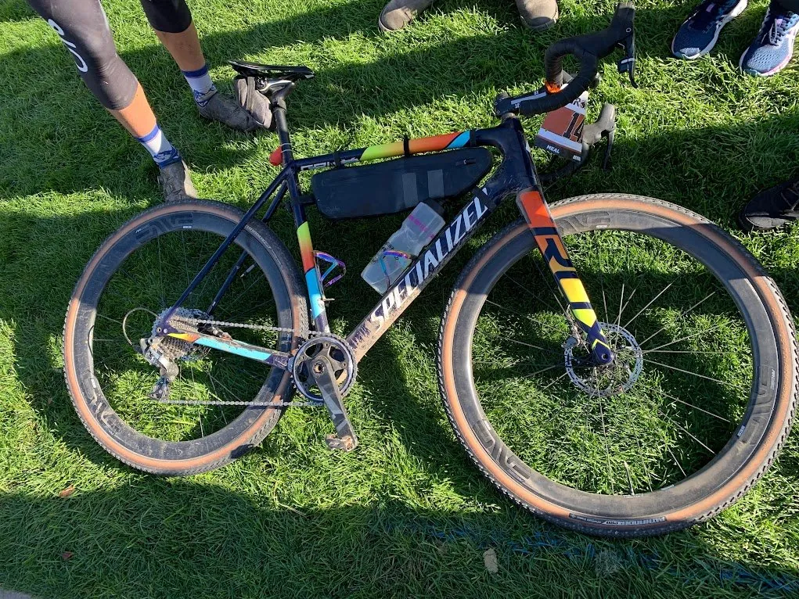
Hydration
When we started it was 32F, maybe a little warmer.
This is Wisconsin in October, so at best you’re looking at a day with the high in the low 60s, at worst you’re in a blizzard.
Either way, you’re still sweating and this is a long event. It’s not a long event in 100F, but still, you should know something about your sweat rate and supplement your sodium. Ironically, being bundled up against the cold ends up causing many to overheat later on, so while the temperature never gets very high, it will feel high with that underlayer you used against the cold five hours earlier.
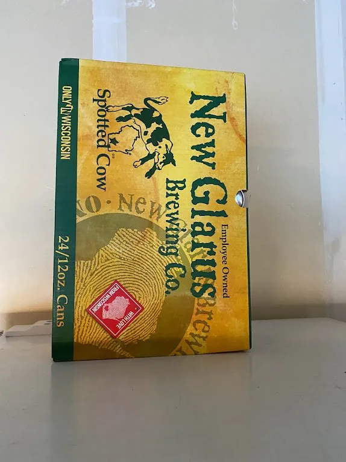
Nutrition
RGG is 144 miles, so you had better eat early and often. As in any event of this length, you’ll want to bring a mix of gels and real food to keep you wanting to eat and to vary the release of energy.
The aid stations are well stocked but they’re not like a convenience store, so make sure you bring plenty of food with you that YOU enjoy.
As ever, err on the side of more. It’s far worse to finish with a few extra bars or gels than it is to find yourself out and about to bonk between aid stations.
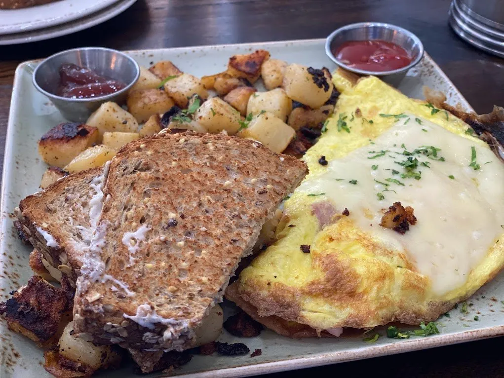
Tactics
Attack on Rib Mountain and try to go solo for 136 miles.
jkjkjkjkjkjkj.
This course rewards groups riding well together, so get in a group and make sure to take pulls so everyone likes you. And I know what you might say:
“Doesn’t every gravel race?”
No, because lots of gravel races feature so much uber technical riding that the stress might not be worth it. RGG has miles and miles of long gravel stretches on ‘hero gravel’ where a group is going to function just as well as on the pavement.
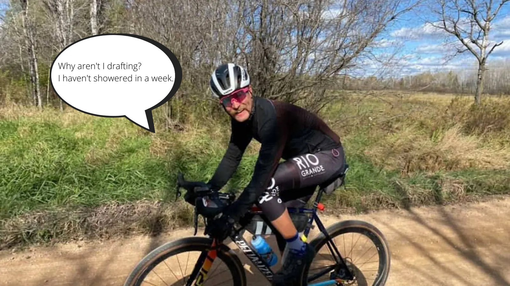